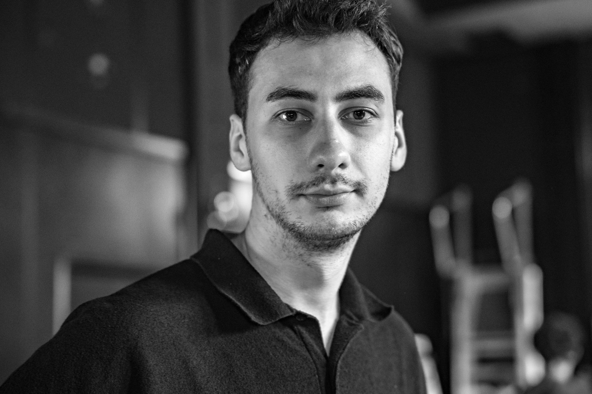

Biography
Creative technologist — interactive installations, sound & experience design.
Download CV (PDF) ↓
“Even if my background is not really linked with electronics, I formed a tight bond that manifested in a growing interest for technological skills. Now it is always part of my work. This bond unveils itself in a modernist-like, interdisciplinary manner and is either interactivity as it attempts to start a dialogue between the viewer and artwork or the result of the interaction between the inhabited space and technology.”
Experience
2026 —
HexagonX — BTL Experience Manager
Bucharest- Program interactive installations and experiences for brand activations and live events
- Lead setup, teardown and on-site technical management, including power distribution and equipment logistics
- Develop concepts and prototypes for installations, scenography and event experiences
2021 —
ATOMAT LAB — Founder
Bucharest- Design and build interactive audiovisual installations using creative coding, custom hardware and sound
- Coordinate EU-funded cultural projects (Culture Moves Europe) from concept through production
- Design and deliver DIY workshops on sound and interaction
- Run an online shop, manufacturing contact microphones and other electronic devices
2019 — 2021
Animotion Production — Sound Designer & Music Producer
Bucharest- Composed music and designed sound for advertising campaigns
- Recorded, edited and mixed voice-over for TV, radio and digital channels
- Synchronised and mastered audio for national and international productions
Education
2023
MA — Interactive Technologies for Performing & Media Arts
UNATC “I.L. Caragiale”, Bucharest — thesis: Designing a Recording Tool for Representing Physical Textures in Sound2017
BTEC — Music Technology
Catalyst Institute (dBs Music), Berlin2016
BA — Film Studies, Television & New Broadcasting Media
Kingston University, LondonSkills
Audio & video
Sound design, music production, spatial audio, custom instruments, live recording, circuit bending. Ableton Live, Pro Tools, Premiere Pro.
Code & interaction
Max/MSP, Processing, microcontrollers, IoT, MIDI, electronics. JavaScript, C, HTML, Sonic Pi, TinyML, TensorFlow.
Fabrication
3D printing, laser cutting, CNC, power tools. Rhino 3D, Illustrator, UGS.
Languages
Romanian (native), English (fluent), French (elementary).
Selected work
Index
Every project, workshop, collab and exhibition is listed on the home page index →